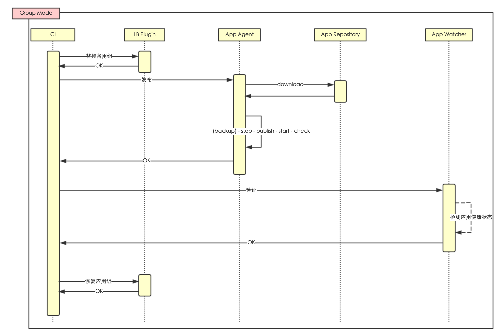

<!DOCTYPE HTML>
<html>
<head><meta name="generator" content="Hexo 3.9.0">
  <meta charset="utf-8">
  <meta http-equiv="X-UA-Compatible" content="IE=edge">
  <meta name="apple-mobile-web-app-capable" content="yes">
  <meta name="apple-mobile-web-app-status-bar-style" content="black">
  <meta name="google-site-verification" content>
  
  <title>【CI/CD】几种常见的不停机发布方式</title>
  <meta name="author" content="Emac">
   <meta name="description" content="何为不停机发布？本文所说的不停机发布，是指在不停止对外服务的前提下完成应用的更新。与热部署的区别在于，热部署关注于应用层面并且以不重启应用为前提，而不停机发布则关注于服务层面。随着摩尔定律逐渐逼近极限和多核时代的到来，分布式应用已经成为事实上的主流。下文首先给出一种通用的适用于分布式应用环境的不停机">
  

  <meta property="og:title" content="【CI/CD】几种常见的不停机发布方式">
  <meta name="viewport" content="width=device-width, initial-scale=1, maximum-scale=1">
  <meta property="og:site_name" content="Emac">
 <meta property="og:image" content="undefined">
  
  <link href="/apple-touch-icon-precomposed.png" sizes="180x180" rel="apple-touch-icon-precomposed">
  <link rel="alternate" href="/atom.xml" title="Emac" type="application/atom+xml">
  <link rel="stylesheet" href="//cdn.bootcss.com/bootstrap/3.3.6/css/bootstrap.min.css">
  <link rel="stylesheet" href="//cdn.bootcss.com/font-awesome/4.5.0/css/font-awesome.min.css">
  <link rel="stylesheet" href="/css/m.min.css">
  <link rel="icon" type="image/x-icon" href="/favicon.ico">
</head>
</html>
<body>
  <div id='wx_pic' style='display:none;'></div>
  <div id="main">
    <div class="behind">
      <div class="back">
        <a href="/" class="black-color"><i class="fa fa-times" aria-hidden="true"></i></a>
      </div>
      <div class="description">
        &nbsp;拾贝
      </div>
    </div>
    <div class="container">
      

  <article class="standard post">
    <div class="title">
      
  
    <h1 class="page-title center">
        【CI/CD】几种常见的不停机发布方式
    </h1>
  


    </div>
    <div class="meta center">
      
<time datetime="2016-06-08T16:00:00.000Z">
  <i class="fa fa-calendar"></i>&nbsp;
  2016-06-09
</time>


    
    &nbsp;
    <i class="fa fa-tag"></i>&nbsp;
    <a href="/categories/devops/">devops</a>


    
    &nbsp;
    <i class="fa fa-tag"></i>&nbsp;
    <a href="/tags/原创/">原创</a>·<a href="/tags/CI-CD/">CI/CD</a>


    </div>
    <hr>
    <div class="picture-container">
      
    </div>
    <h2 id="何为不停机发布？"><a href="#何为不停机发布？" class="headerlink" title="何为不停机发布？"></a>何为不停机发布？</h2><p>本文所说的不停机发布，是指在<strong>不停止对外服务</strong>的前提下完成应用的更新。与<a href="http://emacoo.cn/coding/play-hotdeploy">热部署</a>的区别在于，热部署关注于<strong>应用</strong>层面并且以<strong>不重启应用</strong>为前提，而不停机发布则关注于<strong>服务</strong>层面。随着摩尔定律逐渐逼近极限和多核时代的到来，分布式应用已经成为事实上的主流。下文首先给出一种通用的适用于分布式应用环境的不停机发布方式，然后再介绍Master/Worker这种常见的适用于单机应用的不停机发布方式。</p>
<h2 id="Cluster模式"><a href="#Cluster模式" class="headerlink" title="Cluster模式"></a>Cluster模式</h2><p>对于运行于集群环境的分布式应用，一般在应用之上都有一层负载均衡（LB）。如果在发布过程中，在更新任一节点（也可以是一组节点）前先关闭该节点对应的负载，更新完再打开负载，即可实现整体服务的不停机发布。在此基础上，为了保证服务的稳定性，可以加上备机的支持，即更新某一节点时，先挂上备机，更新完再卸下，依次轮换更新完所有节点后最后再升级备机，如下图所示：</p>
<p></p>
<p><em>* 完整设计可以参考我写的另一篇<a href="https://www.zybuluo.com/emac/note/330205" target="_blank" rel="noopener">文章</a></em></p>
<p>上述发布过程其实就是一个简单的CD（Continuous Deployment）系统。作为一个参考实现，可以使用<a href="http://emacoo.cn/devops/jenkins-2-0-from-ci-to-cd">Jenkins 2.0 Pipeline</a>特性定义整个发布流程，使用<a href="https://github.com/cubicdaiya/ngx_dynamic_upstream" target="_blank" rel="noopener">Nginx Dynamic Upstream</a>插件操纵Nginx，然后配合脚本完成应用的启停和检测。</p>
<p></p>
<h2 id="Master-Worker模式"><a href="#Master-Worker模式" class="headerlink" title="Master/Worker模式"></a>Master/Worker模式</h2><p>对于单机应用，由于不存在LB，一般由应用容器实现不停机发布特性，最常见是Master/Worker模式。容器中常驻一个master进程和多个work进程，master进程只负责加载程序和分发请求，由fork出来的worker进程完成具体工作。当容器收到更新应用的信号时，master进程重新加载更新后的程序，然后fork新的worker进程处理新的请求，而老的worker进程在处理完当前请求后就自动销毁。Ruby的<a href="https://github.com/blog/517-unicorn" target="_blank" rel="noopener">Unicorn</a>，PHP的<a href="http://php-fpm.org/about/" target="_blank" rel="noopener">FPM</a>都是采用了这套机制。</p>
<h2 id="延伸阅读"><a href="#延伸阅读" class="headerlink" title="延伸阅读"></a>延伸阅读</h2><p>不同于Master/Worker模式，erlang采用了另一种独特的方式实现了不停机发布。</p>
<blockquote>
<p>erlang VM为每个模块最多保存2份代码，当前版本’current’和旧版本’old’，当模块第一次被加载时，代码就是’current’版本。如果有新的代码被加载，’current’版本代码就变成了’old’版本，新的代码就成了’current’版本。erlang用两个版本共存的方法来保证任何时候总有一个版本可用，对外服务就不会停止。<br><br><br>—— 引自<a href="http://blog.csdn.net/mycwq/article/details/43372687" target="_blank" rel="noopener">分析erlang热更新实现机制</a></p>
</blockquote>
<h2 id="小结"><a href="#小结" class="headerlink" title="小结"></a>小结</h2><p>不管是LB，还是Master/Worker，其基本思想都是在发布过程中，通过某种机制使得服务请求始终能够被系统的某个节点或者某个进程处理，从而保证了服务的可用性。</p>


  </article>
  </script>


    </div>
  </div>
  <footer class="page-footer"><div class="clearfix">
</div>
<div class="right-foot container">
    <div class="firstrow">
        <a href="#top" >
        <i class="fa fa-arrow-right"></i>
        </a>
        © emacoo.cn 2015-2024
    </div>
    <div class="secondrow">
        <a href="https://github.com/gaoryrt/hexo-theme-pln">
        
        </a>
    </div>
</div>
<div class="clearfix">
</div>
<script async src="//busuanzi.ibruce.info/busuanzi/2.3/busuanzi.pure.mini.js"></script>
<div class="busuanzi center">
    <span id="busuanzi_container_site_pv">本站总访问量<span id="busuanzi_value_site_pv"></span>次</span>
    <span id="busuanzi_container_site_uv">本站访客数<span id="busuanzi_value_site_uv"></span>人次</span>
    <span id="busuanzi_container_page_pv">
      本文总阅读量<span id="busuanzi_value_page_pv"></span>次
    </span>
</div>
</footer>
  <script src="//cdn.bootcss.com/jquery/2.2.1/jquery.min.js"></script>
<script src="/js/search.js"></script>
<script type="text/javascript">

// comments below to disable loading animation
function revealOnScroll() {
  var scrolled = $(window).scrollTop();
  $(".excerpt, .index-title, .index-meta, p").each(function() {
    var current = $(this),
      height = $(window).outerHeight(),
      offsetTop = current.offset().top;
    (scrolled + height + 50 > offsetTop) ? current.addClass("animation"):'';
  });
}
$(window).on("scroll", revealOnScroll);
$(document).ready(revealOnScroll)

// disqus scripts


// dropdown scripts
$(".dropdown").click(function(event) {
  var current = $(this);
  event.stopPropagation();
  $(current).children(".dropdown-content")[($(current).children(".dropdown-content").hasClass("open"))?'removeClass':'addClass']("open")
});
$(document).click(function(){
    $(".dropdown-content").removeClass("open");
})

// back to top scripts
$("a[href='#top']").click(function() {
  $("html, body").animate({ scrollTop: 0 }, 500);
  return false;
});


var path = "/search.xml";
searchFunc(path, 'local-search-input', 'local-search-result');

</script>

</body>
</html>
